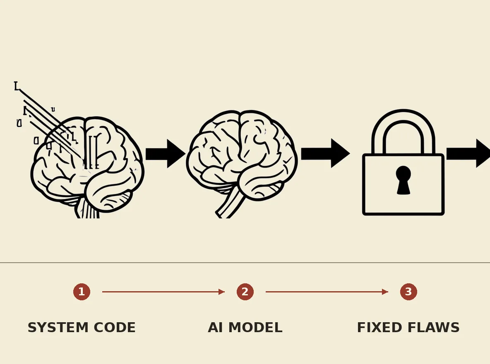

OrcaRouter has released OrcaCyber Zero 1.5, a new cybersecurity model designed for authorized vulnerability research and exploit development. This model features a 1M-token context window, native function calling, and structured outputs, achieving vendor-reported scores of 100% on Cybench and 95.8% on CVE-Bench. It aims to empower security teams by autonomously identifying unknown flaws, reasoning through attack paths, and prioritizing demonstrable exploitability, leading to more validated and fixed vulnerabilities.